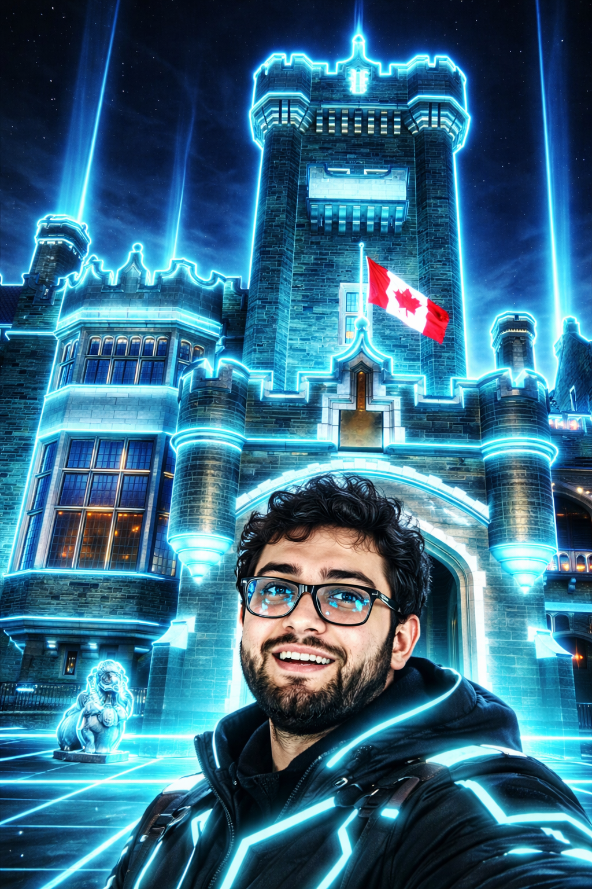

Igor Siqueira Dall Agnol
Professor de Robótica e Finanças | Especialista em Tecnologia
Medianeira, Paraná - Brasil
Apresentação
Olá! Sou Igor Siqueira Dall Agnol, professor apaixonado por robótica e finanças, atualmente ministrando aulas para alunos do ensino médio. Minha missão é inspirar jovens a explorarem o mundo da tecnologia e desenvolverem habilidades essenciais para o futuro.
Com uma abordagem prática e inovadora, busco sempre conectar teoria e prática, preparando meus alunos para os desafios do mercado e da vida financeira.
Informações Pessoais
- Nome completo: Igor Siqueira Dall Agnol
- Cidade: Medianeira, Paraná
- Profissão: Professor e Especialista
- Atuação atual: Professor de Robótica e Finanças
- Público: Alunos do Ensino Médio
Atualmente moro em Medianeira e trabalho exclusivamente como professor, porém atuo como especialista em outras empresas, oferecendo consultoria e soluções nas áreas de robótica, tecnologia e finanças.
Hobbies e Interesses
Criar circuitos eletrônicos
Desenvolvimento de projetos eletrônicos
Mexer com Arduino
Programação e prototipagem
Robótica
Criação de robôs e equipamentos
Áreas de interesse: Robótica educacional, automação, desenvolvimento de equipamentos tecnológicos e inovação no ensino.
Experiências Internacionais
-
Competições de Robótica
Participei de competições de robótica nos EUA e na Turquia, representando o Brasil e adquirindo experiência internacional na área.
-
Intercâmbio Cultural
Intercâmbio de inglês no Canadá em 2024
Bayswater Global Education Experiences
Áreas de Atuação
Além da atuação como professor, também trabalho como especialista para outras empresas, oferecendo consultoria e soluções personalizadas nas áreas de robótica, automação e tecnologia educacional.